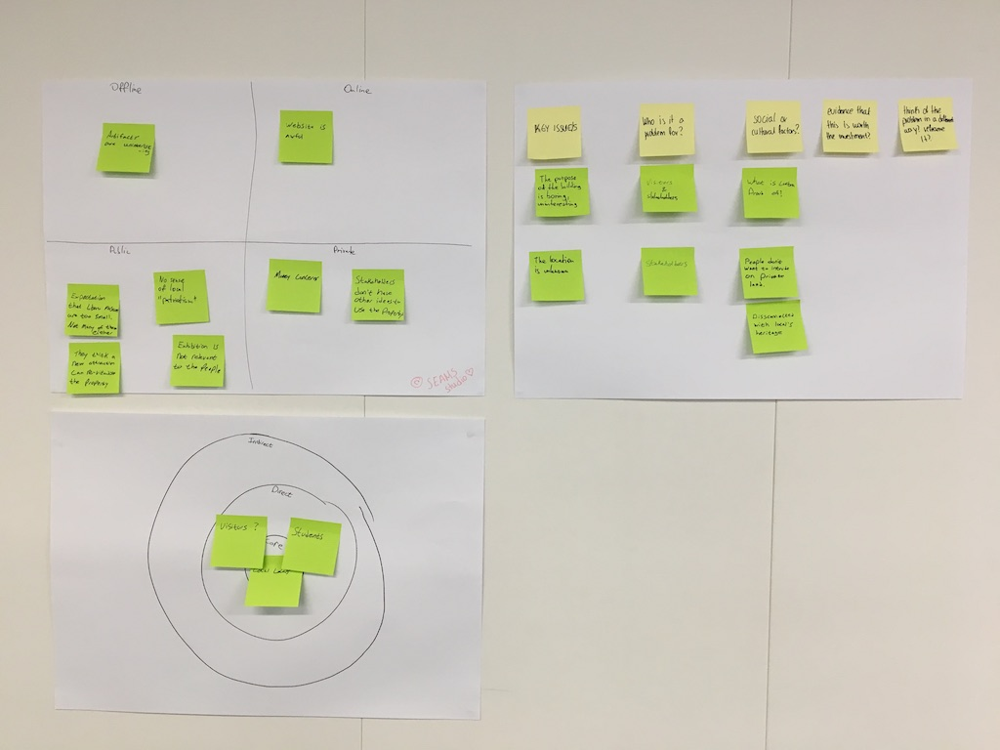

Freshco
Position in Group
I acted as a general designer, specifically assisting with Brief Analysis, Research, Concept Development, Video Storyboard writing and assisted with Video Filming
Brief

There is an Old Rectory building near the town center in Loughborough England that is underutilized. My team was tasked with increasing the footfall of the property as well as overall awareness which will:
- Help the Rectory secure funding to protect against demolition
- Reduce drug usage and other inappropriate activities on the property.
At project commencement, the building was repurposed as a small museum with various artifacts donated by local citizens relating to the town’s history. The donated items included artifacts from the English Civil War, games, clothes and farming equipment that was used by the towns people or residents of the English midlands.
Stakeholders
The museum is managed by a volunteer council. However, due to the voluntary nature of the workforce, the museum has limited operating hours during weekends, aging volunteers and does not receive necessary maintenance. My team was brought in to increase awareness and interest in the property to help establish revenue streams and ideally younger volunteers.


The limited use of this historic building exasperates the lack of awareness and continued deterioration of the property. Homeless people and drug users still use this land, which further reduces the property value and potential interest by local townspeople and families.
The Rectory historically was connected to a nearby church that wants to re-connect the properties even though apartments have been built in-between the two buildings.
Fearon Hall is a local community center that provides various activities as part of its community service programs to the town and serves to assist in social inclusion of townspeople, health and wellbeing, and personal and community development.
Crop Club, a local food growing initiative, is interested to add a local garden in the Rectory’s park to bring businesses and citizens together to promote locally grown produce and create a community to bring people together.
Research Phase
Our first step was to understand the level of understanding local townspeople had of the Rectory Museum. We began by surveying the townsfolk at Fearon Hall and the Loughborough Town Market. The members of the hall are active members of the town, many of whom were stakeholders on the project. Having a larger group that could join the volunteer council would be necessary for continued use. The town market was selected since it is a major event twice a week in town that is considered the best town market in England.
After the initial surveys were completed, we needed more detailed information from the varied sources. Next we conducted interviews that spanned between Loughborough Market Goers, attendees at a Fearon Hall lunch Event, students and people visiting the town center.
Various participants from the lunch event and market attendees were invited to a focus group activity we held. The focus group aimed to engage participants into collaborating with us in identifying what the town is missing and create a base level understanding of the property.
The focus group session had two activities. In the beginning was a introductory questions to get members to talk with one another to relax and get comfortable. The first activity was a word association test where participants would use Post-Its for four topics: Community, Heritage, History and Loughborough (The town the Rectory is located in).
Lastly they would be asked about the reasons they spend time in town and if there is anything missing.
We wanted to understand the reasons people go to the town center, how they spend their time there, and if the heritage of the town is valued such that it can help bring life to the Rectory.
Data Analysis
Our findings suggest that Loughborough shares similar strains to other cities. People wished they had places to spend time outside their homes, a place to relax during their busy schedules and an interest for organic foods.
The weekly market sells organic foods however the supply is low so it sells out early in the mornings. Some aspects of the property we can use to revitalize it is through its location since it is only a short walking distance from the town center; the property is on a large plot of land and nearby to active community centers.
Two personas were created to represent our findings.
Alice

Alice is a busy professional working in the town center. She works a hectic 9-5 job and has been suffering from stress and anxiety from a nearby deadline for work. This means that she works long hours, mainly moving between her home and office. The stress and repetition in her life adds to her feelings of loneliness and a desire to have a place away from her home and office to relax during the day.
Authur
Robert is a small business owner that is looking to retire soon. He wants to grow his own produce for his family now that he will have more personal time, however he does not have enough space for a garden. He is very health conscious and looks forward to spending time with his family and garden. However, he wishes to join a local community since he will no longer commute to the office surrounded by co-workers.
Project Direction
Our final solution brings discrete ideas together to repurpose the Rectory: a sensory garden and a trading post for local goods.
Each of these additions are insufficient independently to achieve our task. A sensory garden could increase the footfall on the property but building this garden is impossible without much needed funding to maintain the building and to build a new garden. Whereas creating a trading post would mean using the grounds only once every two weeks.
Freshco

Value Proposition:
Freshco is a service that brings people together into a community. Whether selling excess food or relaxing in the garden, Freshco connects people together with their heritage and a beautiful historic property.
Sensory Garden

A journey map of the garden was created to make a layout of the property with a particular attention to understanding how the townspeople could walk through the garden.
It was important to let the community feel to this space to reduce vandalism and increase footfall. Additionally, new plants would have to be added on raised soil due to the building code.
Trading Post

The space will also be used to trade locally made goods. This may be a limited supply due to the size of the town and potential sellers, which may not see enough interest to significantly increase awareness of the property.
Sellers and buyers at the trading post would be encouraged to donate money or part of their earnings to help the town and push for community driven incentives.
Management
The current volunteer group overseeing the land is older and in dire need of additional members, especially of younger generations. Fearon Hall would assist in managing the property since it has a larger and more diverse volunteer base.
The positions for the Rectory could be partially run by volunteers to help the townspeople gain work experience. Nearby high school students could be also be available to fill some volunteer positions and gain work experience.